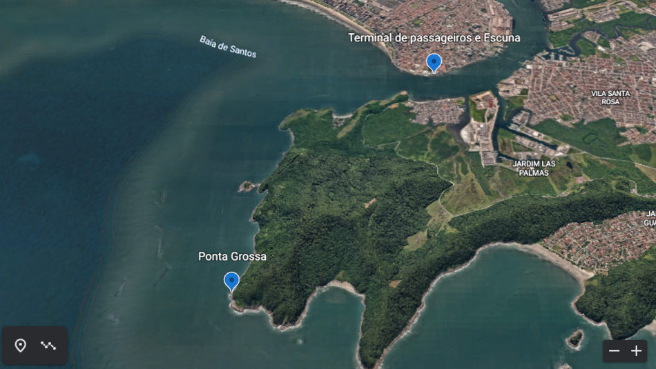
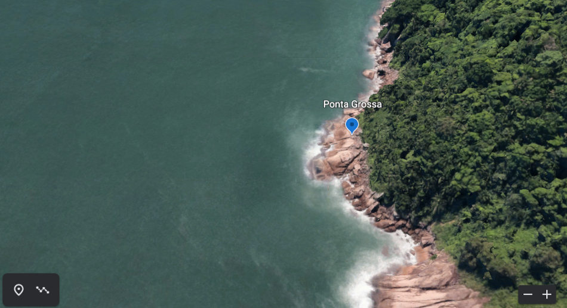
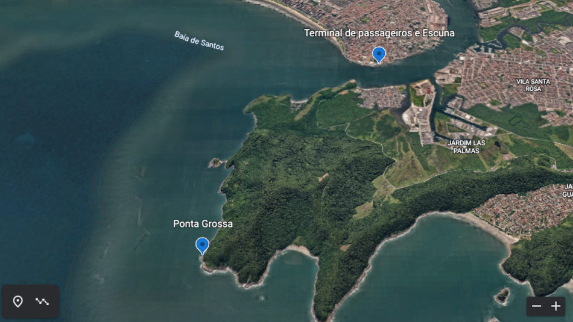
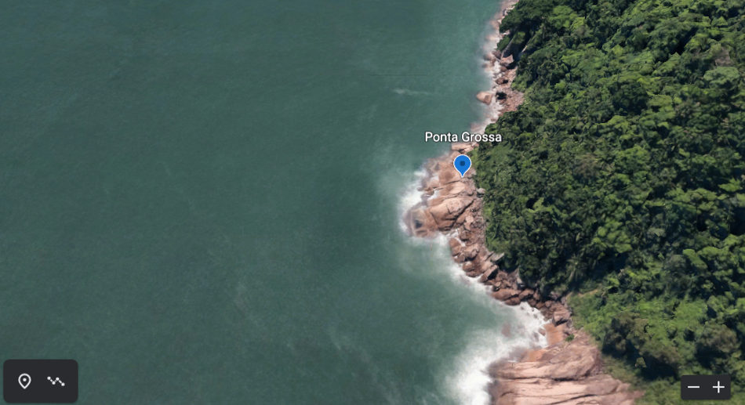

Imagens de Satélite
Tenha uma ampla visão da localização exata das pedras.
Da distância entre elas e a praia de Santos, entre outras localidades.
A distância entre as pedras e o ponto de saída do barco é de aproximadamente 5 Km.
 


